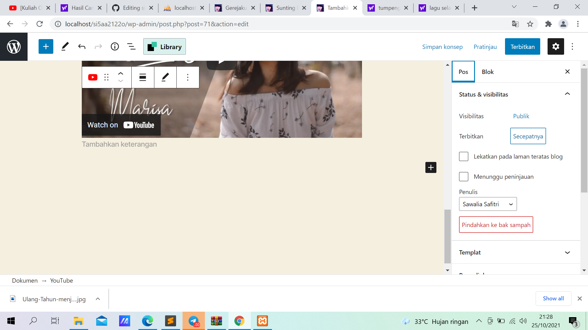

NIM: 1922500190
Nama:Ernita Resva Julina
Kelompok:SI5A
kesimpulan atau hasil pertemuan 3 yang saya ambil adalah:
- Konten terdiri dari dari pragraf. cara membuat teks pragraf justify ubah terlebih dahulu ke mode html. dan tambahkan justify di class atau align=justify . tidak semua tema support justify
- jika konten yang sudah kita post ada salah dalam penulisan sunting pos tersebut dan klik yang atas(beralih ke konsep)
- cara memindahkan foto tanpa harus konek internet,hanya thetring saja atau tanpa mengaktifkan data download WIN SCP Di laptop
- buatlah sebuah tulisan dalam status pending review atau sedang ditinjau peran kontributor. dan disetujui atau revisi oleh editor
- terjadwal(scheduled) dengan cara klik post tambah baru.Kemudian klik pengaturan pilih pos dan atur terbitkan pada tanggal yang akan datang ,jangan sesudah kejadian.
- jika ingin post yang kita jadwal hanya orang tertentu yang bisa melihatnya klik visibilitas dan pilih sesuai keinginan atau bisa pilih terlindungi sandi
Berikut tampilan pengaturan pos scheduleed:

Berikut tampilan web terlindungi sandi:
- Cara Membuat Kategori klik pos kemudian klik atas(Tambah pos baru) klik pengaturan kemudian pos dibagian kategori tambahkan kategori baru
Berikut tampilan pengaturan pos kategori:
- Cara merubah kategori menjadi menu. klik home kemudian pilih tampilan klik menu.
- Dipengaturan menu pilih. menu yang akan di edit(Utama) kemudian klik pilih. setelah itu klik kelola lokasi. Menu horizontal desktop pilih(Utama)